T&T APP
LA APLICACIÓN
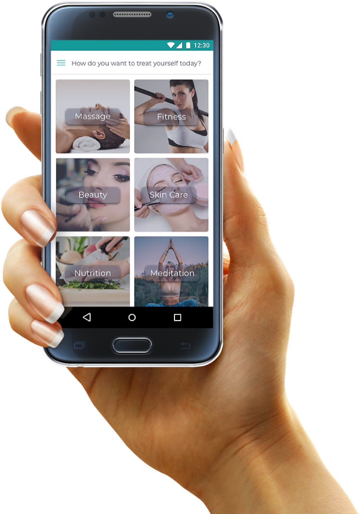Training and Therapies es una plataforma que conecta a profesionales del sector del bienestar con clientes. Los usuarios pueden reservar diferentes servicios de bienestar en unos pocos clics. Los servicios se entregan a los hogares de los clientes, o en cualquier otro lugar preferido, para brindar la máxima comodidad.
DESARROLLO
La estética de la aplicación fue diseñada para ser minimalista, limpia y clara con el fin de que los usuarios se sientan cómodos y seguros en todas las etapas del proceso de reserva. Ningún elemento de diseño como formas o texturas estarán presentes.
MOOD BOARD
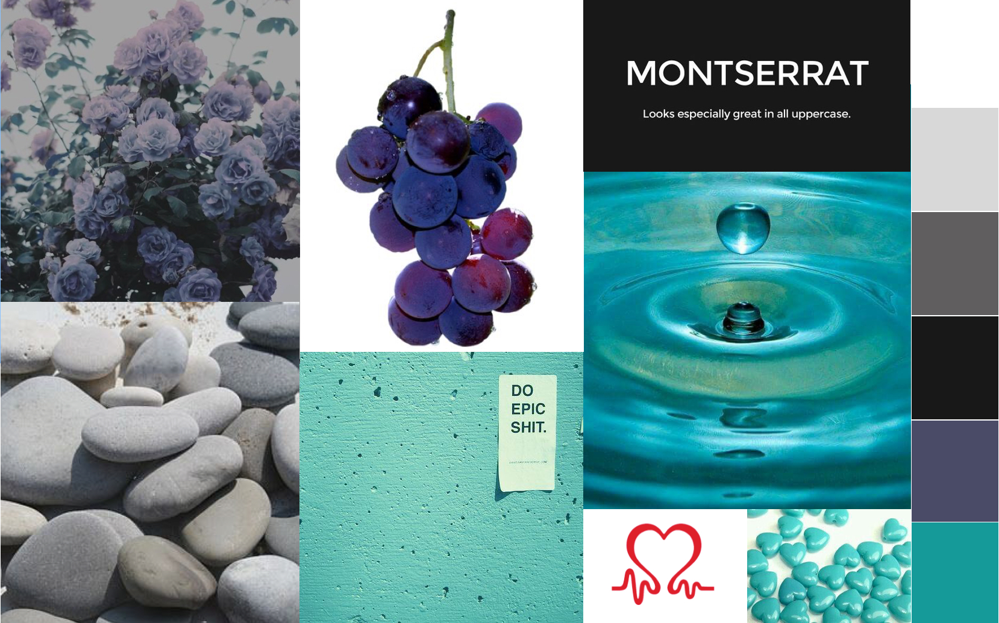Claro, fresco y natural: la inspiración fue el agua fresca, la comida y la vida al aire libre. Este mood board quiere demostrar que las personas sanas están facultadas para lograr lo que desean porque un cuerpo o una mente poco saludable no las retiene.
LOS COLORES
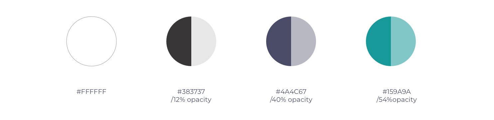LOGO
Al diseñar el logotipo, la intención era demostrar de inmediato la salud y el bienestar, manteniendo la simplicidad. Explorando a través de cientos de imágenes que representan salud y bienestar, la imagen de un corazón de aspecto saludable - inspirado en el logotipo de la Fundación Británica del Corazón - se convirtió en la idea a desarrollar y tomó forma después de algunos bocetos.
TIPOGRAFÍA
Se prefirió una sola fuente para toda la aplicación para mantener un estilo simple. San-serif Montserrat fue elegido por su estética pulida y clara. Solo los pesos ligeros se utilizan tanto en los titulares como en la copia manteniendo una diferencia sutil.
IMÁGENES
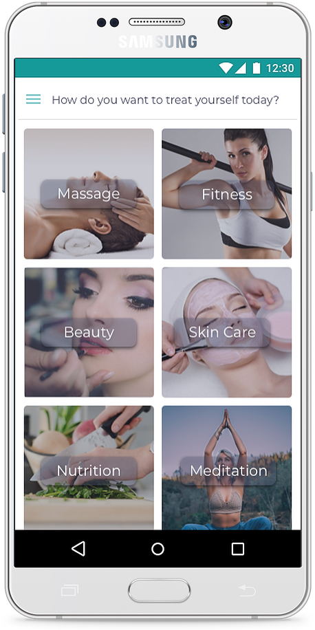Para agregar un poco de calidez y color humano, se utilizan imágenes de personas felices y saludables. Para hacer que todas las fotografías se vean y se sientan consistentes unas con otras, se aplicó un filtro encima de ellas. Sin embargo, se mantuvieron claros, perfectamente coloreados y no demasiado saturados.
LA VOZ
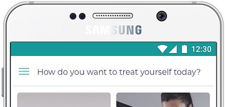To add a bit of human warmth and colour, imagery of healthy happy people is used. In order to make all of the photographs look and feel consistent with one another a filter was applied on top of them. However, they were kept light, perfectly colored, and not overly saturated.
PRIMEROS WIREFRAMES
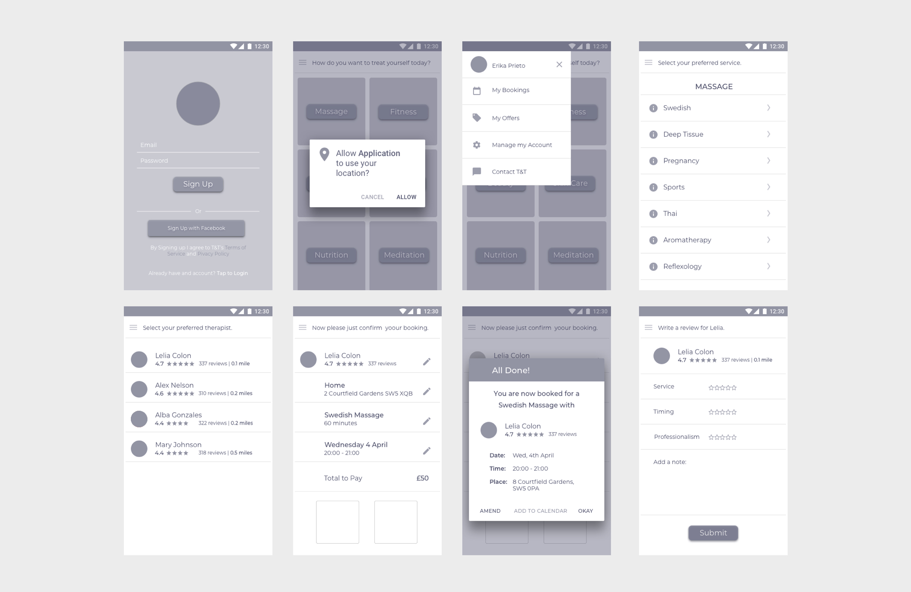MVPs
1. Cuenta de usuario: un proceso de registro sencillo, rápido y simple hace que los usuarios no se desanimen.
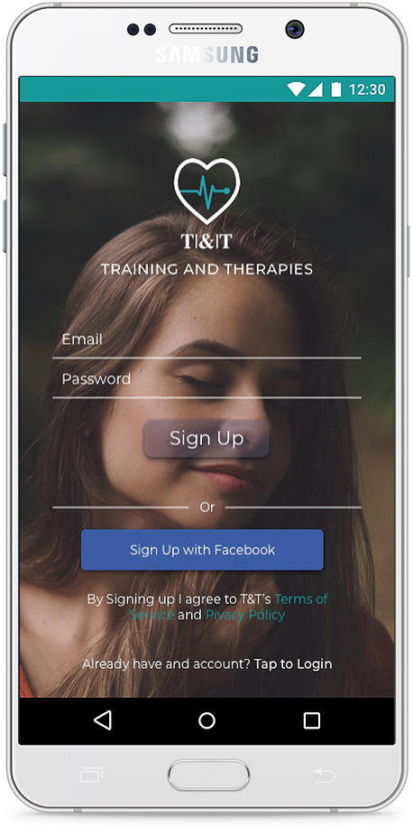2. Sistema de reservas: la reserva se realiza rápida y fácilmente en solo unos pocos pasos.
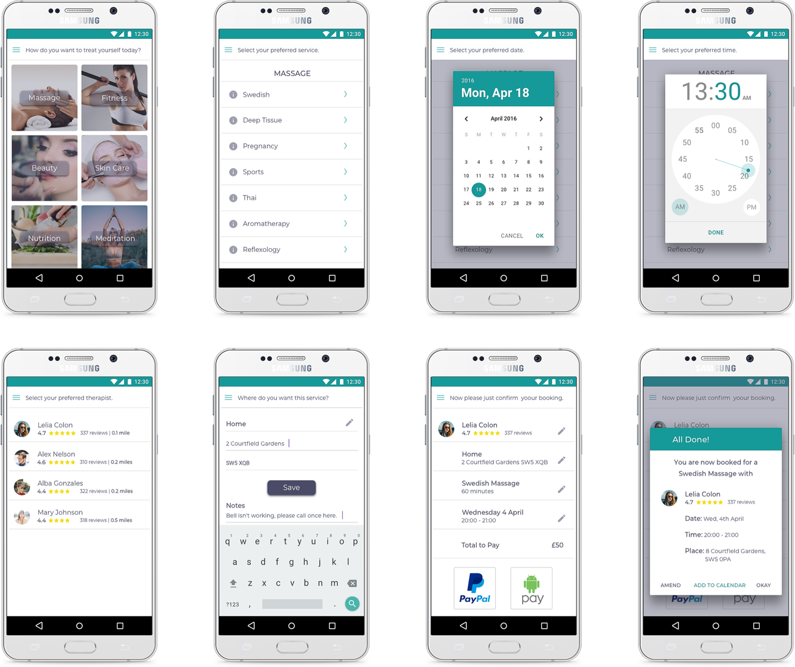3. Pago en línea: las opciones de pago en línea con solo hacer clic en un botón hacen que el proceso sea fácil y seguro para todos los usuarios.
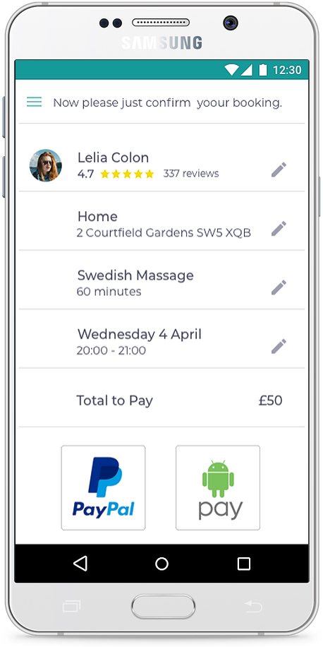4. Clasificación de profesionales: proporcionar a los usuarios la opción de calificar el servicio recibido y garantiza la máxima calidad de servicio por parte de cada profesional.
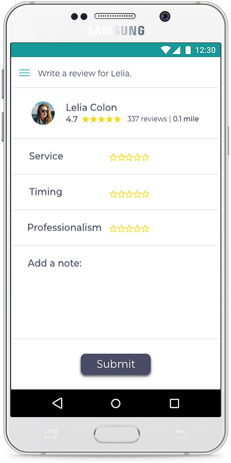5. Manejo de cuentas: Desde el menú los usuarios pueden:
- Ver sus reservas anteriores y manejar sus próximas reservas. Esto significa, cancelar o re programar una reserva.
- Ver y hacer uso de cualquier oferta promocional que la compañía tenga disponible, sin recibir correos electrónicos no solicitados.
- Manejar sus cuentas. Esto significa cambiar la contraseña y la imagen de perfil, editar la dirección de la casa y el método de pago, cerrar sesión y cerrar su cuenta.
- Ponerse en contacto con T&T si necesita ayuda.
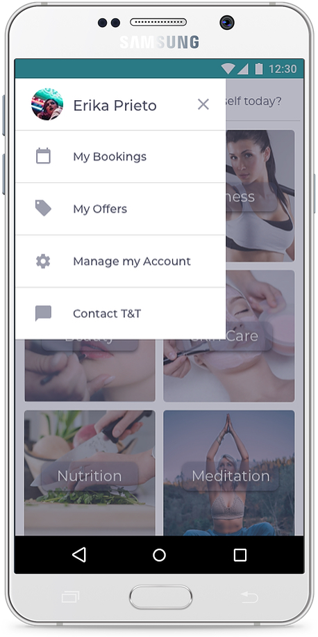